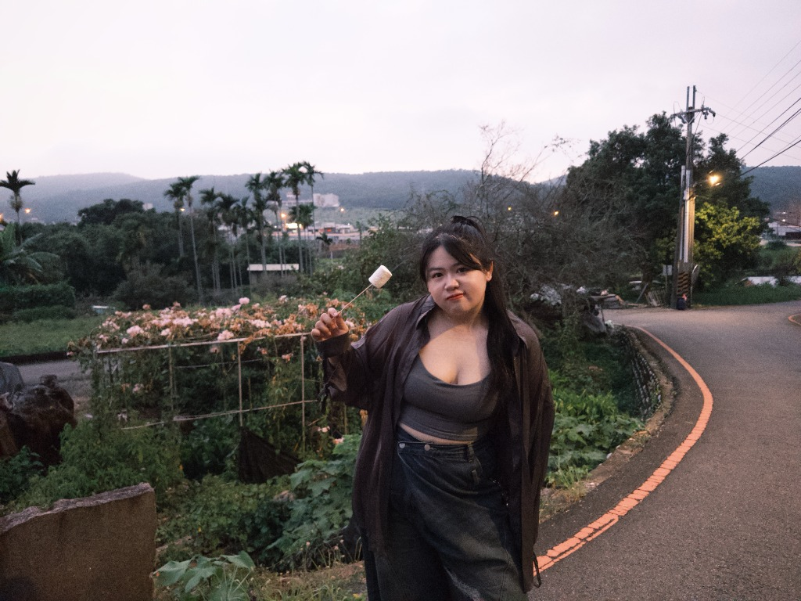
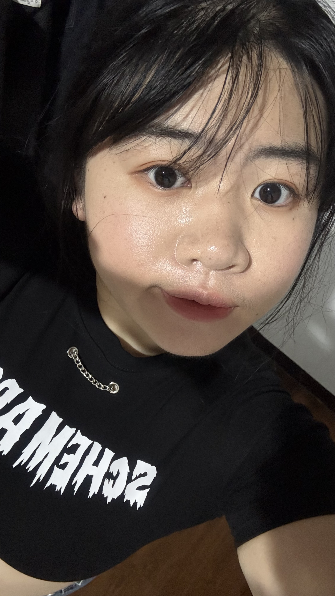

中藥科學
學習手記
科學不只是數據，是理解自然的一種語彙
中藥的有效成分與現代生物醫學如何交織？追尋本質的過程，就像在微觀世界裡拼湊一幅宏大的拼圖。
探索筆記
閱讀更多
Stay Curious
對世界保有細膩感知，在日常與研究中發掘新鮮可能。
Think Independently
比起直接接受答案，更享受抽絲剝繭拼湊真相的過程。
Explore Constantly
在未知中調整步伐，不預設框架，持續成為真實的自己。
目前就讀於 中國醫藥大學 中國藥學暨中藥資源學系，學習的領域涵蓋中藥科學、生物醫學與相關研究。
對我而言，科學不只是冰冷的理論與數據，更是一種理解世界的方式。我喜歡追尋問題背後的原因，也享受從不同角度觀察事物、逐漸拼湊出答案的過程。
除了專業領域，我也對文化、傳統產業及其與現代社會的連結感興趣。
“從中藥材的科學研究，到傳統中藥產業的發展與轉型，這些經歷讓我逐漸意識到，看似不同的領域，其實經常存在值得探索的交集。”
阿雯 Sophia
中國醫藥大學 · 課堂與探索日常
習慣先觀察，再慢慢形成屬於自己的想法
比起急著尋找標準答案，我更喜歡理解事情為什麼會是現在的模樣。不急於下定論，而是留出沉澱與梳理的空間。
我相信每個觀點都有值得思考的地方。面對不熟悉的事物，我願意花時間學習、嘗試，並在過程中動態調整自己的理解。
我喜歡有條理地分析問題，享受邏輯的嚴謹；同時也深刻珍惜那些難以單純用數字或邏輯解釋的溫度與感受。
我不認為一個人必須被單一的專業或身分束縛。比起設定明確標籤，我更希望保有接觸不同事物的自由，讓興趣、經驗與想法自然累積。
保持好奇 · 獨立思考 · 持續探索
「我相信，真正的成長不只是累積知識與能力，更是逐漸理解自己、理解他人，以及理解我們所處的世界。」
不需要每個問題都有立即的答案，也不需要每一步都走在預先設定好的道路上。
這個網站是我整理生活、學習與想法的小小空間。這裡可能會有專業知識、研究紀錄、閱讀心得，也可能只是某個平凡日子裡突然出現的想法。
中藥的有效成分與現代生物醫學如何交織？追尋本質的過程，就像在微觀世界裡拼湊一幅宏大的拼圖。
看似古老的傳統藥材產業，如何走進現代年輕人的生活常態？在文化傳承與現代化之間，我們能找到哪些交集？
在某個暮色裡烤棉花糖、隨意散步。成長或許就是學會允許自己帶著好奇心走岔路，欣賞不同風景。
“不一定每篇內容都很完整，也不一定所有想法都有明確的結論。但它們都是我探索世界的痕跡。”
那些難以單純用邏輯解釋的日常片刻
慶生時刻的溫暖笑容
美食、甜點與熱愛生活的片刻
校園與求學足跡
帶著識別證穿梭於實驗與探索

在暮色鄉間漫步
山巒、微風與甜味
好奇與淘氣
生活總需要一點幽默感
自然的日常
做自己最舒適的樣子

古靈精怪的一面
保留頑皮，世界更廣闊
在轉彎處遇見風景
每一步都是重新認識世界與自己的機會
沉靜思維
保留一點獨處沉澱的時光
「不需要每個問題都有立即的答案，也不需要每一步都走在預先設定好的道路上。」
無論是中藥科學討論、跨領域合作，或單純交流想法，都非常歡迎捎來訊息。
分享你的想法、書單或想要探討的議題